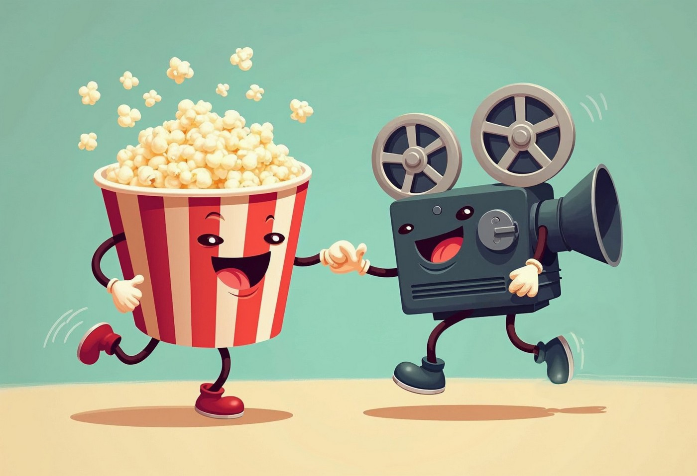
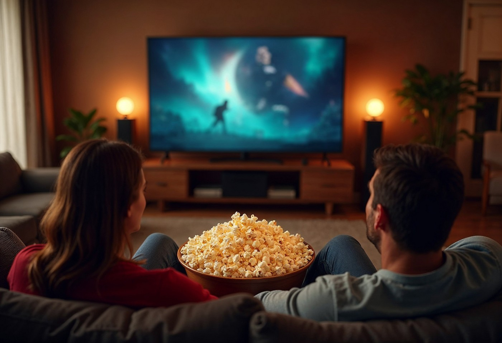

Popcorn and a Movie

A Snack Born at the Movies
When you go to the movies, what's the first snack that comes to mind? Popcorn, of course! But have you ever wondered why this fluffy, crunchy treat became the official snack of cinema? The story of how popcorn and movies became paired is actually quite fascinating. It began in the late 1800s, continued through the Great Depression, and since then, the sensory connection between the two has created a global cultural phenomenon.
How It All Began
Popcorn and movies began their cinematic union in the late 1800s and early 1900s when street vendors started selling popcorn outside of theaters. Many theaters at the time didn't allow food inside, so people snacked and socialized while waiting in line to buy movie tickets. The hard economic times of the 1930s, however, forced theaters to look for additional sources of revenue. Popcorn was cheap, and the profit margin was high, so popcorn vendors were finally welcomed into theater lobbies. By the 1940s, the union between popcorn and movie theaters was firmly established.
A Complete Sensory Experience
Today, popcorn and a movie at the theaters offers a complete sensory experience. As you approach the theater, the aroma of buttery popcorn fills the air. Your mouth begins watering even before you have the chance to buy your own bucket. As you watch the movie, both the smell and taste of the popcorn enhance that sensory connection. Combined with the sights and sounds of the film, your senses are fully immersed. Because of this sensory experience, now when you think of popcorn, you think of movies, and vice-versa. Freshly popped popcorn has become synonymous with "movie."

Movie Night at Home
With modern home entertainment systems, date nights no longer require popcorn and a movie only at theaters. The big-screen TV and surround sound system, combined with streaming services, have made "popcorn and a movie" a common event at home. Microwave a bag of popcorn, and that familiar aroma fills the house. The popcorn and movie union has expanded from a shared, public experience to a private and personal ritual.
A Tradition That Lasts
Whether at a theater or at home, the popcorn and movie association is here to stay. It's been passed down through generations, creating new popcorn enthusiasts who continue the tradition. From the street vendors to the home theaters of today, the sensory connection remains unbroken, and "popcorn and a movie" continues to be the go-to choice for a night out or a relaxing evening at home.